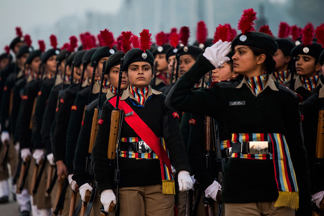

NCC IIT Hyderabad
© NCC IITH, 2022
Contact Us
NCC-IITH, Acad Block-A Room No:
office,ncc@iith.ac.in
xxx-xxx-xxx-x
The National Cadet Corps (NCC) is the youth wing of the Indian Armed Forces with its headquarters in New Delhi, India. It is open to school and college students on a voluntary basis as a Tri-Services Organisation, comprising the Army, the Navy and the Air Force, engaged in developing the youth of the country into disciplined and patriotic citizens. The soldier youth foundation in India is a voluntary organization which recruits cadets from high schools, higher secondary, colleges and universities all over India. The cadets are given basic military training in small arms and drill. The officers and cadets have no liability for active military service once they complete their course. The emblem of the NCC consists of 3 colors; red, dark blue and light blue. These colors represent the Indian Army, Indian Navy and Indian Air Force respectively. The 17 lotuses indicate the 17 directories of India.
The ‘Aim’ of the NCC laid out in 1988 have stood the test of time and continue to meet the requirements expected of it in the current socio–economic scenario of the country. The NCC aims at developing character, comradeship, discipline, a secular outlook, the spirit of adventure and ideals of selfless service amongst young citizens. Further, it aims at creating a pool of organized, trained and motivated youth with leadership qualities in all walks of life, who will serve the Nation regardless of which career they choose. Needless to say, the NCC also provides an environment conducive to motivating young Indians to join the armed forces.
WE THE CADETS OF THE NATIONAL CADET CORPS,
DO SOLEMNLY PLEDGE THAT WE SHALL ALWAYS UPHOLD THE UNITY OF INDIA.
WE RESOLVE TO BE DISCIPLINED AND RESPONSIBLE CITIZEN OF OUR NATION.
WE SHALL UNDERTAKE POSITIVE COMMUNITY SERVICE IN THE SPIRIT OF SELFLESSNESS
AND CONCERN FOR OUR FELLOW BEINGS.
NCC IIT Hyderabad
© NCC IITH, 2022
NCC-IITH, Acad Block-A Room No:
office,ncc@iith.ac.in
xxx-xxx-xxx-x
Follow us on social media!